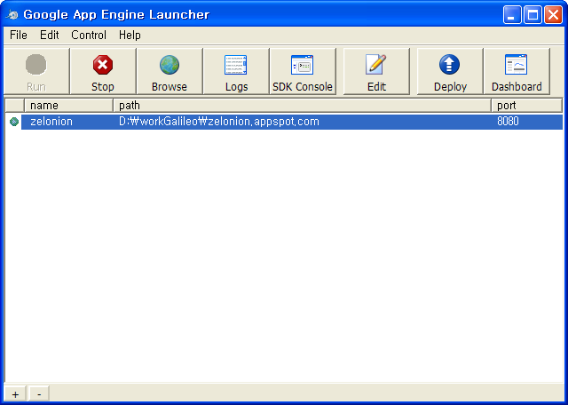

2009-09-06 16:44:12
* from : http://googleappengine.blogspot.com/2009/09/app-engine-launcher-for-windows.html
http://pop.wimy.com 은 구글의 App engine 으로 개발 중인데, SDK 버젼이 1.2.5 로 업데이트되면서 윈도우용 launcher 를 포함했다. 기존에도 Mac OS 용으로는 있었던 것 같은데 이번에 윈도우용이 포함된 것이다.

기존에 개발할 때는 eclipse 에서 External tool 에서 조금 복잡한 설정을 하고, project 를 오고 가면서 하기 힘들었는데, 이번에 launcher 가 제공되면서 좀더 편하게 사용할 수 있게 되었다.
한가지 단점이 있는데, local web server port 를 1024 밑으로 설정할 수 없다는 것이다. 테스트를 할 때 port 를 80 으로 쓰면 웹 브라우저에 그냥 http://localhost 만 쓰면 되는데, http://localhost:8080 처럼 포트를 지정해줘야한다는 것이다. 아마 보안의 문제로 1024 아래의 포트를 못 쓰게 한것 같은데 조금 아쉬운 부분이다. 그래도 한번 주소를 치면 계속 Reload(F5) 로 재실행시키니 큰 단점은 아닌듯하다.